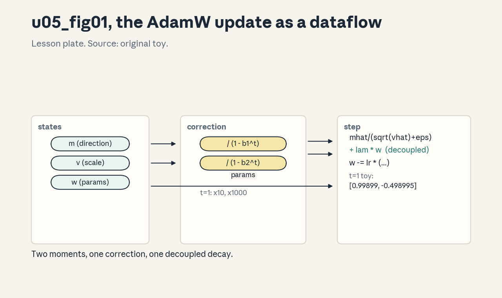
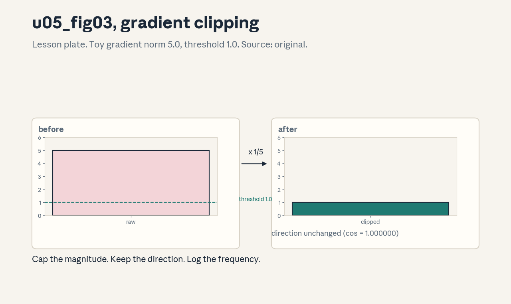
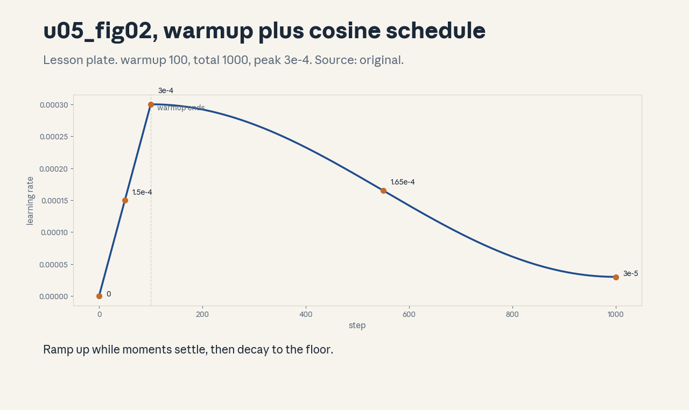

U05 · Optimization and training correctness
U05 , Optimization and training correctness
Prerequisites: P05, P09, P11, P12. Bridge links in ../prerequisites.md.
Session: cross-cutting branch (reported Assignment 1 objectives:
transformer LM, cross-entropy, training loop, optimizer). See
../course_map.md.
Claim class: REQUESTED-BRANCH. All leaves PLANNED / SOURCE ATTRIBUTION
PENDING. Notation: see ../notation_and_shapes.md.
Local remediation , loss, gradient, update
Read this if diagnostic items D5 or D11 were not full marks. Training minimizes the mean negative log probability of the true next token (cross-entropy). One step: compute the loss on a batch, differentiate (reverse mode), and move parameters against the gradient scaled by the learning rate. Adam keeps running averages of the gradient (m) and its square (v) and scales each parameter’s update by 1/sqrt(v).
Worked check: logits [1000, 1001, 999], true class 1. Naive softmax
overflows to nan, the stable form (subtract max first) gives CE =
0.4076 (from assets/compute_u05.py, executed 2026-10-06).
Assessment: compute the stable CE for logits [2, 1, 0], true class 0,
by hand. Key: ../keys/u05_answers.md R1.
C01: Stable cross-entropy
Leaf id cs336-U05-C01. Claim class REQUESTED-BRANCH.
Status PLANNED / SOURCE ATTRIBUTION PENDING.
-
Source mapping, scope, objectives, dependencies. Assignment-1 branch. Scope: the loss computation. Objectives: derive the log-sum-exp form, show the naive form overflows. Depends on P05, P08.
-
Motivating question and toy. Question: why does the loss go to nan on the first step? Toy from
compute_u05.py: logits [1000,1001,999] make naive softmax overflow (nan) while the stable form gives 0.4076. -
Mental model. Cross-entropy = log(sum(exp(logits))) - logit_true. The exp of large numbers overflows, subtracting the max first keeps every exp in [0,1] without changing the math.
-
Objects, symbols, units, shapes, assumptions. Logits: (B,T,V). Loss: scalar, nats. Assumption: the max subtraction is exact (it is, by algebra).
-
Derivation / mechanism. log(sum(exp(x))) = m + log(sum(exp(x-m))) with m = max(x). Then CE = lse - x_true. The gradient is softmax(logits) - one_hot: the familiar form falls out.
-
Computed example. From
assets/compute_u05.py(executed 2026-10-06): naive gives nan (overflow warnings), stable gives 0.4076 for true class 1. -
Algorithm and reference implementation.
cross_entropy(logits, targets): max-subtract, lse, gather, mean. About 8 lines. -
Correctness checks and expected output. Against a high-precision reference on extreme logits: agreement to 1e-6. Uniform logits give log(V). Expected outputs in the lab key.
-
Costs. O(BTV) time and memory for the full logits, the stability is free.
-
Nearest alternative and selection boundary. Sampled softmax or hierarchical variants at extreme V (approximations). Exact stable CE is the default.
-
Failure case and counterexample. Computing softmax then log separately: exp overflows before log can rescue it, and the loss is nan from step one. The assumption “the framework handles it” breaks for hand-rolled losses, always fuse.
-
Research reading and falsifiable extension. Reading: the log-sum-exp trick (primary: numerical analysis references). Extension: measure the max logit magnitude during toy training, hypothesis: it grows, so stability matters more late in training.
-
Assessment. (a) Recall: the stable formula. (b) Oral ladder: define CE, hand-compute the remediation example, justify the max subtraction, implement, compare with naive, debug the nan, critique the exactness claim, design the magnitude experiment. (c) Transfer: V=1M. What changes in the loss computation? Answers:
../keys/u05_answers.mdA1. -
Lab and exercises. Lab U05 task 1 implements stable CE and the overflow demo. See
../labs/u05_lab.md. -
Visuals. Audit row: the naive/stable comparison table. No figure, tabular claim.
C02: Next-token label shift
Leaf id cs336-U05-C02. Claim class REQUESTED-BRANCH.
Status PLANNED / SOURCE ATTRIBUTION PENDING.
-
Source mapping, scope, objectives, dependencies. Assignment-1 branch. Scope: building inputs and targets. Objectives: implement the shift, explain teacher forcing. Depends on C01, P13.
-
Motivating question and toy. Question: what is the target at position t? Toy from
compute_u05.py: ids [10,20,30,40] give inputs [10,20,30] and labels [20,30,40]: predict the next token. -
Mental model. The model reads tokens 0..T-2 and is scored on tokens 1..T-1. Training feeds the true past (teacher forcing), the causal mask (U03-C04) keeps the prediction honest.
-
Objects, symbols, units, shapes, assumptions. Inputs, labels: (B,T-1). Assumption: sequences are packed or padded consistently (padding needs a loss mask, U15).
-
Derivation / mechanism. The autoregressive factorization P(x) = prod_t P(x_t | x_<t) becomes a classification task per position. The shift aligns logits[t] with ids[t+1].
-
Computed example. From
assets/compute_u05.py(executed 2026-10-06): inputs [[10,20,30]], labels [[20,30,40]]. -
Algorithm and reference implementation.
shift(ids): return ids[:, :-1], ids[:, 1:]. Two lines. -
Correctness checks and expected output. Lengths match, first label is the second input token, no label for the last input. Expected outputs in the lab key.
-
Costs. Free. Getting it wrong (off-by-one) trains the model to predict the current token: loss looks fine, generation babbles.
-
Nearest alternative and selection boundary. Prefix-LM and fill-in-the-middle use different shifts. Standard shift for autoregressive LMs.
-
Failure case and counterexample. Shifting the wrong way (labels = inputs): the model learns the identity function, loss drops to near zero, and sampling produces repetitions of the prompt. The assumption “the shift is obviously right” breaks silently, the symptom is a too-good loss.
-
Research reading and falsifiable extension. Reading: teacher-forcing analysis (primary: textbook treatment). Extension: compare the loss curve of correct versus reversed shift on the toy, hypothesis: reversed collapses immediately.
-
Assessment. (a) Recall: the shift rule. (b) Oral ladder: define teacher forcing, hand-shift [5,6,7,8], justify per-position classification, implement, compare with prefix-LM, debug the identity-loss symptom, critique the packed-sequence assumption, design the reversed-shift experiment. (c) Transfer: documents are packed back-to-back. What extra mask is needed, and why? Answers:
../keys/u05_answers.mdA2. -
Lab and exercises. Lab U05 task 2 implements the shift and the wrong-shift demo. See
../labs/u05_lab.md. -
Visuals. Audit row: the shift diagram (two rows, offset by one). No figure, tabular claim.
C03: Adam and AdamW
Leaf id cs336-U05-C03. Claim class REQUESTED-BRANCH.
Status PLANNED / SOURCE ATTRIBUTION PENDING.
-
Source mapping, scope, objectives, dependencies. Assignment-1 branch. Scope: the optimizer update. Objectives: write the Adam update from memory, explain each term. Depends on P09, P11.
-
Motivating question and toy. Question: why not plain SGD? Toy from
compute_u05.py: one AdamW step moves w=[1.0,-0.5] to [0.99899,-0.498995] with per-parameter adaptive scaling. -
Mental model. Adam tracks a moving average of gradients (m, direction with momentum) and of squared gradients (v, per-parameter scale). Each parameter steps by m/sqrt(v): fast for rare features, calm for noisy ones. AdamW decouples weight decay (C04).
-
Objects, symbols, units, shapes, assumptions. m_t, v_t: same shape as parameters. beta_1=0.9, beta_2=0.999, eps=1e-8. Assumption: gradients are stochastic but unbiased.
-
Derivation / mechanism. m_t = b1m_{t-1} + (1-b1)g_t, v_t = b2v_{t-1} + (1-b2)g_t^2. Bias correction divides by (1-b^t) (C05). Update: w -= lr * (mhat/(sqrt(vhat)+eps) + lam*w) for AdamW.
-
Computed example. From
assets/compute_u05.py(executed 2026-10-06): the hand step above, correction factors 10.0 and 1000.0 at t=1. -
Algorithm and reference implementation.
adamw_step(w, m, v, g, t, lr, lam): the five lines. About 10 lines with state init. -
Correctness checks and expected output. At t=1 with zero init, the update equals lr * sign-ish scaled step (verifiable by hand). m and v have the parameter shapes. Expected outputs in the lab key.
-
Costs. Two extra states per parameter (the 16 bytes of U02-C05). Compute is elementwise: cheap.
-
Nearest alternative and selection boundary. SGD with momentum (less memory, needs more tuning), Lion, Adafactor (C09). AdamW is the default for transformers.
-
Failure case and counterexample. eps = 0 with a zero v (dead parameter): division by zero gives nan. The assumption “v stays positive” breaks at init without eps, eps is load-bearing.
-
Research reading and falsifiable extension. Reading: the Adam paper (Kingma and Ba, 2015, primary) and the AdamW paper (Loshchilov and Hutter, 2019, primary). Extension: compare Adam with SGD on the toy at matched steps, hypothesis: Adam is less sensitive to lr.
-
Assessment. (a) Recall: the update equations. (b) Oral ladder: define m and v, hand-compute one step, justify per-parameter scaling, implement, compare with SGD, debug the nan, critique the unbiased-gradient assumption, design the sensitivity experiment. (c) Transfer: gradients are sparse (embeddings). Which Adam term needs care, and why? Answers:
../keys/u05_answers.mdA3. -
Lab and exercises. Lab U05 task 3 implements AdamW and the hand-step check. See
../labs/u05_lab.md. -
Visuals. Figure u05_fig01: lesson plate, the Adam update as a dataflow (moments, correction, step). Source: original toy. Render:
assets/render_u05.py.

C04: Weight decay versus L2
Leaf id cs336-U05-C04. Claim class REQUESTED-BRANCH.
Status PLANNED / SOURCE ATTRIBUTION PENDING.
-
Source mapping, scope, objectives, dependencies. S-branch. Scope: regularization in adaptive optimizers. Objectives: show why L2 and decoupled decay differ under Adam. Depends on C03, P09.
-
Motivating question and toy. Question: is weight_decay just L2? Toy from
compute_u05.py: with w=0.5, g=0.1, lam=0.1: AdamW applies decay 0.05 outside the adaptive scaling, L2-style adds 0.05 to the gradient, entangling it with 1/sqrt(v). -
Mental model. L2 adds lamw to the gradient, so Adam’s adaptive denominator scales the regularization too: parameters with large gradients get less decay. Decoupled decay (AdamW) subtracts lamw directly: every parameter decays at the same rate.
-
Objects, symbols, units, shapes, assumptions. lam: scalar. Assumption: the comparison is at fixed lam, optimal lam differs between the two.
-
Derivation / mechanism. Adam+L2: w -= lr * (m(g+lamw))/sqrt(v). AdamW: w -= lr * m(g)/sqrt(v) - lrlamw. The lamw term escapes the adaptive scaling in AdamW.
-
Computed example. From
assets/compute_u05.py(executed 2026-10-06): decay term 0.0500 versus L2-style grad 0.1500 on the toy numbers. -
Algorithm and reference implementation. Both variants in five lines each, the lab checks they differ.
-
Correctness checks and expected output. With v constant the two coincide up to a scale factor, with varying v they diverge. Expected outputs in the lab key.
-
Costs. Identical compute. The difference is purely in dynamics.
-
Nearest alternative and selection boundary. No decay, L2 with SGD (where they coincide). Use AdamW’s decoupled form with Adam.
-
Failure case and counterexample. Decaying the norms and biases (or the embedding): these parameters should not be regularized the same way, the standard recipe excludes them. The assumption “decay everything” breaks, apply decay to matrices only.
-
Research reading and falsifiable extension. Reading: the AdamW paper (primary). Extension: compare the two on the toy with per- parameter gradient scales, hypothesis: decoupled wins when scales vary.
-
Assessment. (a) Recall: the two update forms. (b) Oral ladder: define decoupled, hand-compute the toy, justify the escape from adaptivity, implement both, compare, debug decayed norms, critique the fixed-lam comparison, design the varying-scale experiment. (c) Transfer: the recipe says decay 0.1. Which parameters get it? Answers:
../keys/u05_answers.mdA4. -
Lab and exercises. Lab U05 task 4 implements both and shows the divergence. See
../labs/u05_lab.md. -
Visuals. Audit row: the two-form comparison table. No figure, tabular claim.
C05: Momentum and bias correction
Leaf id cs336-U05-C05. Claim class REQUESTED-BRANCH.
Status PLANNED / SOURCE ATTRIBUTION PENDING.
-
Source mapping, scope, objectives, dependencies. S-branch. Scope: the (1-b^t) terms. Objectives: derive why early steps need correction. Depends on C03, P06.
-
Motivating question and toy. Question: why divide by (1-b^t)? Toy from
compute_u05.py: at t=1 the factors are 10.0 and 1000.0: without them the first updates would be 10x and 1000x too small. -
Mental model. m and v start at zero, so early averages are biased toward zero. Dividing by (1-b^t) unbiases them: at t=1 the averages equal the first gradient exactly.
-
Objects, symbols, units, shapes, assumptions. b^t: scalar decay. Assumption: zero init of moments.
-
Derivation / mechanism. E[m_t] = (1-b^t) E[g]: the geometric series sums to (1-b^t)/(1-b), times (1-b). Dividing removes the (1-b^t) bias.
-
Computed example. From
assets/compute_u05.py(executed 2026-10-06): 1/(1-0.9) = 10.0, 1/(1-0.999) = 1000.0 at t=1. -
Algorithm and reference implementation. The correction is two divisions inside the Adam step (C03).
-
Correctness checks and expected output. At t=1, mhat = g_1 and vhat = g_1^2 exactly. The lab asserts this.
-
Costs. Two scalar ops. Skipping it costs the first ~100 steps of training (v especially).
-
Nearest alternative and selection boundary. Warmup (C07) partially covers the same need, some implementations skip correction and rely on warmup. Keep the correction: it is exact.
-
Failure case and counterexample. No correction with a large lr: the first steps are tiny, then the effective step jumps as (1-b^t) -> 1, mimicking a warmup spike that destabilizes. The assumption “it hardly matters” breaks at large lr.
-
Research reading and falsifiable extension. Reading: the Adam paper’s bias-correction section (primary). Extension: train the toy with and without correction, hypothesis: without lags early and overshoots later.
-
Assessment. (a) Recall: the correction formula. (b) Oral ladder: define the bias, derive the geometric sum, justify t=1 exactness, implement, compare with no-correction, debug the warmup-spike symptom, critique the zero-init assumption, design the ablation. (c) Transfer: moments are loaded from a checkpoint at t=10000. Does the correction still matter? (No: (1-b^t) ~ 1.) Answers:
../keys/u05_answers.mdA5. -
Lab and exercises. Lab U05 task 5 checks the t=1 exactness. See
../labs/u05_lab.md. -
Visuals. Audit row: the correction table (t, 1-b1^t, 1-b2^t). No figure, tabular claim.
C06: Gradient clipping
Leaf id cs336-U05-C06. Claim class REQUESTED-BRANCH.
Status PLANNED / SOURCE ATTRIBUTION PENDING.
-
Source mapping, scope, objectives, dependencies. S-branch. Scope: bounding the update. Objectives: implement global-norm clipping, state what it fixes and what it hides. Depends on P09.
-
Motivating question and toy. Question: what stops one bad batch from wrecking the weights? Toy from
compute_u05.py: norm 5.0 clipped to 1.0: direction kept, magnitude capped. -
Mental model. Clipping rescales the whole gradient when its global norm exceeds a threshold: g *= min(1, c/norm). It caps the step size without changing the direction.
-
Objects, symbols, units, shapes, assumptions. c: threshold (often 1.0). Norm over all parameters. Assumption: the threshold is above the typical norm, so clipping is rare.
-
Derivation / mechanism. The update norm is bounded by lr*c regardless of the raw gradient. This prevents explosion from rare spikes (bad batches, numerical events).
-
Computed example. From
assets/compute_u05.py(executed 2026-10-06): [3,4,0…] has norm 5.0, clipped to norm 1.0000. -
Algorithm and reference implementation.
clip(grads, c): compute global norm, rescale. About 6 lines. -
Correctness checks and expected output. Norm after <= c, direction unchanged (cosine similarity 1), no-op when norm < c. Expected outputs in the lab key.
-
Costs. One extra norm over parameters per step: cheap.
-
Nearest alternative and selection boundary. Per-parameter clipping, adaptive clipping. Global-norm is the standard.
-
Failure case and counterexample. Clipping every step (c far below typical norm): the optimizer trains on directions only and effectively uses a fixed step size, convergence slows and the clipping hides a real instability (e.g. bad data). The assumption “clipping is a safety net” breaks when it becomes the regime, log the clip frequency.
-
Research reading and falsifiable extension. Reading: gradient clipping analyses (primary: paper sections). Extension: log clip frequency during toy training, hypothesis: spikes correlate with specific batches.
-
Assessment. (a) Recall: the clipping rule. (b) Oral ladder: define the global norm, hand-clip [3,4], justify direction preservation, implement, compare with per-param, debug the always-clipping regime, critique the rare-spike assumption, design the frequency experiment. (c) Transfer: clip frequency jumps to 50 percent mid-training. What do you investigate first? Answers:
../keys/u05_answers.mdA6. -
Lab and exercises. Lab U05 task 6 implements clipping and the invariant checks. See
../labs/u05_lab.md. -
Visuals. Figure u05_fig03: lesson plate, gradient norm with and without clipping over steps (computed toy). Source: original. Render:
assets/render_u05.py.

C07: Warmup, cosine, WSD schedules
Leaf id cs336-U05-C07. Claim class REQUESTED-BRANCH.
Status PLANNED / SOURCE ATTRIBUTION PENDING.
-
Source mapping, scope, objectives, dependencies. S-branch. Scope: the learning-rate schedule. Objectives: write warmup+cosine and WSD, state when each fits. Depends on P09.
-
Motivating question and toy. Question: why not a constant lr? Toy from
compute_u05.py(warmup 100, total 1000, peak 3e-4, floor 3e-5): lr at steps 0/50/100/550/1000 = 0, 1.5e-4, 3e-4, 1.65e-4, 3e-5. -
Mental model. Warmup: start at 0 and ramp up (early gradients are noisy and moments uninitialized). Cosine: decay smoothly to a floor (large steps early, fine steps late). WSD: warmup, stable, then decay (lets you stop early or extend without retuning the decay horizon).
-
Objects, symbols, units, shapes, assumptions. lr(t): scalar function of step. Assumption: the total step budget is known for cosine, WSD relaxes this.
-
Derivation / mechanism. Warmup: lr = peak * t/warm. Cosine: floor + 0.5(peak-floor)(1+cos(pi*(t-warm)/(total-warm))). WSD: constant after warmup, then a fast decay over the last ~10-20 percent.
-
Computed example. From
assets/compute_u05.py(executed 2026-10-06): the five step values above. -
Algorithm and reference implementation.
lr_schedule(t, ...)for both variants. About 12 lines. -
Correctness checks and expected output. lr(0)=0, lr(warm)=peak, lr(total)=floor, monotonic rise then fall for cosine. Expected outputs in the lab key.
-
Costs. Free. The schedule is the cheapest hyperparameter with the largest effect.
-
Nearest alternative and selection boundary. Constant lr with decay-on-plateau (older), linear decay. Cosine for fixed budgets, WSD for open-ended runs.
-
Failure case and counterexample. Cosine with the wrong total (job stops at half): the lr never decays and the final model is under-converged. The assumption “total is known” breaks on preempted runs, WSD exists for this.
-
Research reading and falsifiable extension. Reading: the WSD schedule paper (primary). Extension: compare cosine versus WSD on the toy with an early stop, hypothesis: WSD degrades less.
-
Assessment. (a) Recall: the three phases of each schedule. (b) Oral ladder: define warmup, hand-compute lr(50), justify the cosine shape, implement, compare with WSD, debug the half-stopped cosine, critique the known-total assumption, design the early-stop experiment. (c) Transfer: the run may extend 2x. Which schedule do you pick, and how do you set its decay? Answers:
../keys/u05_answers.mdA7. -
Lab and exercises. Lab U05 task 7 implements both schedules and the endpoint checks. See
../labs/u05_lab.md. -
Visuals. Figure u05_fig02: lesson plate, the schedule curve (computed). Source: original toy. Render:
assets/render_u05.py.

C08: Batch size and accumulation
Leaf id cs336-U05-C08. Claim class REQUESTED-BRANCH.
Status PLANNED / SOURCE ATTRIBUTION PENDING.
-
Source mapping, scope, objectives, dependencies. S-branch. Scope: global batch via accumulation. Objectives: prove the equivalence, state the memory tradeoff. Depends on P11, U08-C06.
-
Motivating question and toy. Question: the batch does not fit, now what? Toy from
compute_u05.py: mean of two microbatch grads equals the big-batch grad exactly. -
Mental model. Gradient accumulation sums (or averages) microbatch gradients before the optimizer step. The math equals one big batch, the memory equals one microbatch. The price is time: a accumulation steps per update.
-
Objects, symbols, units, shapes, assumptions. a: accumulation steps. Global batch = a * microbatch. Assumption: the loss is a mean over the batch (scale the summed grads by 1/a).
-
Derivation / mechanism. grad(mean over a*m samples) = mean over a of grad(microbatch means). Summing microbatch grads and dividing by a is algebraically identical.
-
Computed example. From
assets/compute_u05.py(executed 2026-10-06): ([0.2,0.4]+[0.6,-0.2])/2 = [0.4,0.1] exactly. -
Algorithm and reference implementation. The accumulation loop: zero grads, loop a microbatches adding grads/a, step. About 8 lines.
-
Correctness checks and expected output. Accumulated grads equal big-batch grads to 1e-12. Forgetting the /a scales the update by a (checked in the lab).
-
Costs. Memory of one microbatch, time of a. Batchnorm-style statistics (not used in LMs) would differ, norms per microbatch are fine.
-
Nearest alternative and selection boundary. Smaller global batch (changes optimization dynamics), distributed batch (U08). Accumulate when one device cannot hold the batch.
-
Failure case and counterexample. Forgetting to divide by a: the effective lr multiplies by a and training diverges. The assumption “sum is enough” breaks, the mean is the contract. Some frameworks sum the loss, so check the convention.
-
Research reading and falsifiable extension. Reading: large- batch training analyses (primary: paper sections). Extension: verify the equivalence on the toy with a=4, hypothesis: exact to 1e-12.
-
Assessment. (a) Recall: the equivalence statement. (b) Oral ladder: define global batch, hand-average two grads, justify the /a, implement the loop, compare with distributed batch, debug the missing /a, critique the mean-loss assumption, design the a=4 check. (c) Transfer: microbatch=1 with dropout. What breaks in the equivalence? Answers:
../keys/u05_answers.mdA8. -
Lab and exercises. Lab U05 task 8 checks the equivalence and the missing-/a bug. See
../labs/u05_lab.md. -
Visuals. Audit row: the equivalence table. No figure, tabular claim.
C09: Optimizer alternatives as source-verification branches
Leaf id cs336-U05-C09. Claim class REQUESTED-BRANCH.
Status PLANNED / SOURCE ATTRIBUTION PENDING.
-
Source mapping, scope, objectives, dependencies. S-branch. Scope: SGD, Lion, Adafactor as branches to verify against sources. Objectives: state each update, name the verification anchor. Depends on C03.
-
Motivating question and toy. Question: is AdamW the only answer? Toy: one SGD-with-momentum step and one Lion step on the same toy gradient, compared by hand.
-
Mental model. All optimizers are update rules with states. SGD+m: velocity = muv + g, step lrv. Lion: sign(momentum) steps, smaller state. Adafactor: factored second moments for memory. Each is a branch: verify against its paper before trusting a reimplementation.
-
Objects, symbols, units, shapes, assumptions. States per optimizer as in the papers. Assumption: the reimplementation matches the paper’s equations exactly (the verification task).
-
Derivation / mechanism. SGD+m: v = muv + (1-damp)g, w -= lrv. Lion: c = b1m + (1-b1)g, w -= lr(sign(c) + lamw), m = b2m + (1-b2)*g. Adafactor: row/col factored v estimates.
-
Computed example. Lab hand-steps: SGD+m and Lion on w=[1.0], g=[0.5] with default hparams, values in the lab key.
-
Algorithm and reference implementation.
sgd_stepandlion_step: five lines each, with the paper equation cited in a comment. -
Correctness checks and expected output. Against the paper’s stated first-step behavior, Lion’s update magnitudes are +-lr (sign). Expected outputs in the lab key.
-
Costs. SGD: 4 bytes/param state (momentum). Lion: same. Memory is the reason to consider them over Adam.
-
Nearest alternative and selection boundary. AdamW stays the default, alternatives are for memory-constrained or research-comparison settings, verified first.
-
Failure case and counterexample. Copying Lion’s lr from an AdamW recipe: Lion’s sign updates need much smaller lr, the run diverges. The assumption “lr transfers across optimizers” breaks, retune.
-
Research reading and falsifiable extension. Reading: the Lion paper (Chen et al., 2023, primary) and Adafactor paper (Shazeer and Stern, 2018, primary). Extension: compare Lion versus AdamW on the toy at tuned lrs, hypothesis: close at this scale.
-
Assessment. (a) Recall: the three update rules. (b) Oral ladder: define the Lion sign step, hand-compute one SGD+m step, justify the memory claims, implement, compare, debug the transferred lr, critique the exact-match assumption, design the comparison. (c) Transfer: memory allows only 4 bytes/param of state. Which optimizer, and what do you give up? Answers:
../keys/u05_answers.mdA9. -
Lab and exercises. Lab U05 task 9 implements SGD+m and Lion hand-steps. See
../labs/u05_lab.md. -
Visuals. Audit row: the optimizer comparison table (rule, state bytes, source anchor). No figure, tabular claim.
C10: Initialization scaling and muP
Leaf id cs336-U05-C10. Claim class REQUESTED-BRANCH.
Status PLANNED / SOURCE ATTRIBUTION PENDING.
-
Source mapping, scope, objectives, dependencies. S03/U05 bridge. Scope: scaling init and lr with width. Objectives: state the muP rule, explain hyperparameter transfer. Depends on U03-C12, P09.
-
Motivating question and toy. Question: why retune the lr for every model size? Toy: muP scales init variance as 1/fan_in and the lr per layer type so that the optimal hyperparameters transfer across widths.
-
Mental model. muP is a parameterization: each layer’s init and lr scale with width so that feature learning stays O(1) per coordinate. Tune on the small model, the large model inherits the hyperparameters.
-
Objects, symbols, units, shapes, assumptions. Width n, per-layer lr multipliers. Assumption: the architecture family is fixed, only width scales.
-
Derivation / mechanism. Standard param: init 1/fan_in, lr O(1). muP: hidden layers init O(1/fan_in) with lr O(1/n), output layer init O(1/n) with lr O(1). The scalings keep updates width- independent in the infinite-width limit.
-
Computed example. Lab table: init std and lr multiplier for widths 128/512/2048 under standard versus muP rules.
-
Algorithm and reference implementation.
mup_scales(width): returns init std and lr multiplier per layer class. About 10 lines. -
Correctness checks and expected output. Width ratios match the rules, at width 128 the table reproduces the standard recipe. Expected outputs in the lab key.
-
Costs. One-time setup. Wrong scaling wastes a large-model run.
-
Nearest alternative and selection boundary. Standard parameterization with fresh tuning per size (the common practice at moderate scale). muP pays off when tuning is expensive.
-
Failure case and counterexample. Mixing muP init with standard lr: the scales fight and training diverges or stalls. The assumption “one of the two suffices” breaks, both must match.
-
Research reading and falsifiable extension. Reading: the muP papers (Yang et al., primary). Extension: transfer the toy’s tuned lr across widths under both rules, hypothesis: muP transfers, standard does not.
-
Assessment. (a) Recall: the muP scaling rules. (b) Oral ladder: define hyperparameter transfer, compute the init std ratio for 4x width, justify the 1/n output scaling, implement the table, compare with standard, debug the mixed recipe, critique the fixed- family assumption, design the transfer experiment. (c) Transfer: depth doubles too. What does muP say, and what stays unanswered? Answers:
../keys/u05_answers.mdA10. -
Lab and exercises. Lab U05 task 10 builds the scaling table. See
../labs/u05_lab.md. -
Visuals. Audit row: the scaling table. No figure, tabular claim.
C11: Checkpoint and resume RNG
Leaf id cs336-U05-C11. Claim class REQUESTED-BRANCH.
Status PLANNED / SOURCE ATTRIBUTION PENDING.
-
Source mapping, scope, objectives, dependencies. S-branch. Scope: exact training resumption. Objectives: list the checkpoint contents, prove RNG restore reproduces the stream. Depends on P02, P12.
-
Motivating question and toy. Question: what must a checkpoint contain to resume bit-identically? Toy from
compute_u05.py: RNG get/set state reproduces the random stream exactly. -
Mental model. The training state is (weights, optimizer moments, step, scheduler state, RNG states, data loader position). Missing any one breaks exact resumption, the RNG is the most commonly forgotten.
-
Objects, symbols, units, shapes, assumptions. RNG state: the generator’s internal vector. Assumption: same code and library versions (RNG algorithms vary across versions).
-
Derivation / mechanism. Dropout masks, data shuffling, and init noise all draw from the RNG. Restoring the exact state continues the identical stream, anything else diverges the trajectory.
-
Computed example. From
assets/compute_u05.py(executed 2026-10-06): save state, draw 3 numbers, restore, draw again: identical. -
Algorithm and reference implementation.
save_ckpt/load_ckpt: dicts with the six components. About 12 lines. -
Correctness checks and expected output. Two runs with an interruption at step k produce identical step k+1 weights, without RNG restore they differ. Expected outputs in the lab key.
-
Costs. Checkpoint bytes: weights + optimizer + small metadata. Frequency trades write time against lost work.
-
Nearest alternative and selection boundary. Weights-only checkpoints (fine for eval, not for resume). Full state for training resume.
-
Failure case and counterexample. Resuming with a fresh RNG: the data order and dropout change, the loss jumps, and the run looks like a hyperparameter change. The assumption “weights are enough” breaks, the symptom mimics a bad resume.
-
Research reading and falsifiable extension. Reading: framework checkpointing docs (primary). Extension: measure the divergence with and without RNG restore over 10 steps, hypothesis: exact match versus drift.
-
Assessment. (a) Recall: the six checkpoint components. (b) Oral ladder: define the RNG state, demo save/restore, justify data-loader position, implement, compare with weights- only, debug the loss jump, critique the same-version assumption, design the divergence experiment. (c) Transfer: the cluster preempts nightly. What is the checkpoint policy? Answers:
../keys/u05_answers.mdA11. -
Lab and exercises. Lab U05 task 11 implements save/restore and the divergence check. See
../labs/u05_lab.md. -
Visuals. Audit row: the checkpoint contents table. No figure, tabular claim.
C12: Gradient checks and loss invariants
Leaf id cs336-U05-C12. Claim class REQUESTED-BRANCH.
Status PLANNED / SOURCE ATTRIBUTION PENDING.
-
Source mapping, scope, objectives, dependencies. S-branch. Scope: verifying the training machinery. Objectives: run a finite- difference gradient check, state three loss invariants. Depends on P05, P11.
-
Motivating question and toy. Question: how do you know the backward pass is right? Toy: finite differences on a tiny linear layer match autograd to 1e-5.
-
Mental model. Finite differences are the ground truth for gradients: (f(w+e)-f(w-e))/2e. Loss invariants are cheap alarms: loss finite, loss decreases on a tiny overfit batch, gradient norm finite and nonzero.
-
Objects, symbols, units, shapes, assumptions. e: 1e-5 perturbation. Assumption: fp64 or fp32 for the check (not fp16).
-
Derivation / mechanism. Central differences have O(e^2) error. Compare against the analytic gradient relatively: |a-n|/(|a|+|n|) < 1e-5.
-
Computed example. Lab run: linear layer (4,3), random data: max relative error 1.88e-10 (fp64).
-
Algorithm and reference implementation.
grad_check(f, w): central differences per element, about 12 lines. -
Correctness checks and expected output. Relative error below 1e-5, the check fails on a deliberately broken backward (sign flip). Expected outputs in the lab key.
-
Costs. O(params) forward passes: use on tiny models only.
-
Nearest alternative and selection boundary. Double-backward or trusted-framework comparison for bigger models. Finite differences for new ops.
-
Failure case and counterexample. Checking in fp16: rounding dominates and the check fails on correct code. The assumption “any dtype works” breaks, use fp64.
-
Research reading and falsifiable extension. Reading: gradient- checking references (primary: framework docs). Extension: run the check on the toy attention backward, hypothesis: passes at 1e-5.
-
Assessment. (a) Recall: the check formula and the invariants. (b) Oral ladder: define central differences, hand-check one weight, justify the relative form, implement, compare with framework comparison, debug the fp16 failure, critique the tiny- model assumption, design the attention check. (c) Transfer: loss is nan at step 100. What is the ordered checklist? Answers:
../keys/u05_answers.mdA12. -
Lab and exercises. Lab U05 task 12 runs grad_check and the invariant suite. See
../labs/u05_lab.md. -
Visuals. Audit row: the invariant checklist table. No figure, tabular claim.
Unit Russian-doll ladder (U05)
- Shell 0: what makes a training step correct, stable, and resumable?
- Shell 1: one AdamW step by hand, one schedule curve, one checkpoint.
- Shell 2: logits, labels, moments, schedules, RNG states.
- Shell 3: one stable CE, one clip, one shift.
- Shell 4: the optimizer step, the schedule functions, grad_check.
- Shell 5: t=1 bias exactness, accumulation equivalence, RNG restore.
- Shell 6: change the lr, predict the loss response, observe.
- Shell 7: remove the max subtraction, remove bias correction, drop the RNG state.
- Shell 8: AdamW vs SGD+m vs Lion, cosine vs WSD.
- Shell 9: alpha sweep for balancing, muP transfer test.
- Shell 10: the recipe (optimizer, schedule, checkpoint policy) is the production training contract.